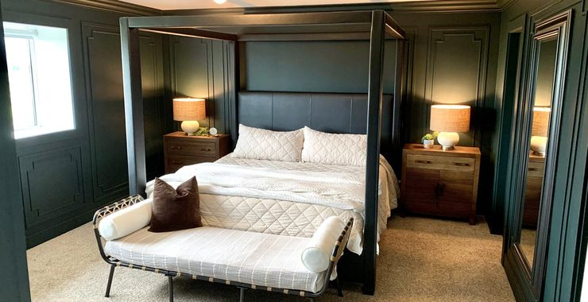

Wainscoting & Paneling — Franklin, Brentwood & Nashville, TN
Walls with backbone.
Board and batten, raised panel, picture-frame molding, full-height paneling — laid out to your room's proportions, scribed to walls that were never square, and painted to a furniture finish. Built by a finish carpenter, not assembled from a kit.
Talk to SeanWhy it matters
Layout is the whole game
Anyone can nail boards to a wall. What separates wainscoting you love from wainscoting you tolerate is the layout — panel widths that land evenly at every corner, heights that agree with your windows and rails, reveals that stay consistent around outlets and doorways. I work that out on paper and on the wall before the first cut, so the finished room looks inevitable.
What I build
Every style, built to your room
Every job is caulked, filled, primed, and painted. You get a finished wall, not a carpentry kit.
For Interior Designers
Your drawings, executed to the line
Send me your elevations and I'll build them as drawn — or flag the spot where the plan meets a crooked wall before it becomes a jobsite surprise. Panel layouts confirmed with you before the first cut, progress photos along the way, and paint-ready or fully painted, your call.
Serving design firms across Franklin, Brentwood, and Nashville. One project at a time, scheduled in writing.
Common questions
Wainscoting, answered straight
What does wainscoting cost?
It depends on the style, the height, and how many walls. A simple board-and-batten accent wall and a full room of raised panel are very different jobs. Send a photo of the room and what you have in mind, and you'll get an honest number — fixed price or time-and-materials, whichever saves you money.
Is paint included?
Yes. Wainscoting isn't finished until it's caulked, filled, primed, and painted.
Can you match my existing trim and molding?
In most cases, yes. I'll match profiles from stock where they exist and build up custom profiles where they don't, so new work reads like it was always there.
MDF or real wood?
Both, honestly recommended. Paint-grade MDF is stable and seamless for most interior walls. Wood earns its keep in wet areas, high-wear spots, and stain-grade work. I'll tell you which your room actually needs.